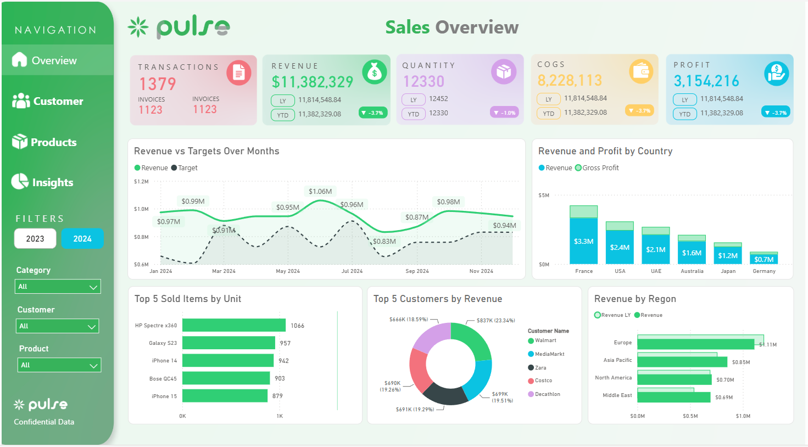

Available for dashboard and reporting projects
Dashboards and reporting solutions that make business data easier to understand.
I design and build professional Power BI reports for business reporting, KPI tracking and decision-making. I also help improve Excel reporting workflows and prepare clean SQL-based datasets when the data needs more structure.
Power BI Development
Interactive dashboards, DAX and data model
Excel reporting
Improve, automate or migrate reports
SQL datasets
Clean data prepared for analysis
Power BI
Excel
DAX
Power Query
SQL Server
Data Modelling
Business Reporting
Dashboard & Reporting Portfolio
Power BI · Excel · SQL
About me
Hi, I’m Uby, a Business Intelligence professional based in Australia. I build Power BI dashboards and reporting solutions that help teams understand performance, identify issues and make better decisions.
My strongest value is the combination of dashboard design, data modelling, DAX, Power Query and practical SQL experience for reporting. I focus on reports that are visually polished, easy to use, reliable and maintainable.
I also work with Excel reporting, especially when clients want to improve an existing spreadsheet-based process or gradually move manual reporting into Power BI.
Featured sample work
Examples of the type of work I can deliver.
This section will include live report links and case studies as each sample project is published.

Dashboard · Sales Analytics
Sales Performance Dashboard
Executive sales overview with revenue trends, performance KPIs, category analysis and interactive filtering for decision makers.
Power BI
DAX
Sales KPIs
View live report
Excel · Reporting Workflow
Excel Reporting Improvement
Sample project showing how a manual spreadsheet report can be cleaned, structured and improved for recurring business reporting.
Excel
Power Query
Reporting flow
Add case study
Source
Clean dataset
Model
Report
SQL · Data Preparation
Reporting Dataset Pipeline
Sample architecture showing data extraction, cleaning, transformation rules and report-ready tables for analysis.
SQL Server
Data model
Reporting layer
Add architecture link
What I can help with
Reporting services focused on clarity, usability and business value.
Power BI Dashboard Development
Clean, modern Power BI reports with clear KPIs, visual hierarchy, drill-throughs, tooltips and intuitive navigation.
Power BI Service
DAX
Power Query
Excel Reporting
Improve existing spreadsheets, clean reporting flows, automate preparation steps and keep reports easier to maintain.
Power Pivot
Power Query
Automation
Data Modelling & DAX
Create models, calculations and reporting structures that are accurate, understandable and easier to scale.
Data models
DAX
Power Query
SQL for Reporting
Prepare clean datasets using SQL queries, views and reporting logic for Power BI dashboards, Excel files and analysis.
SQL Server
T-SQL
Datasets